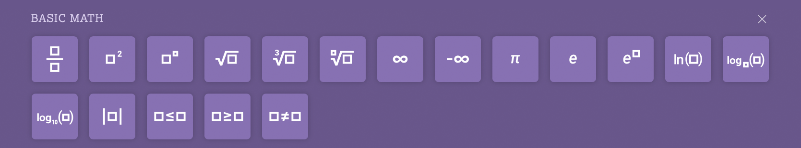

Portfolio: Math Input

Wolfram|Alpha is a product that does really quite an astonishing number of things…but what users truly do with it is math. Which was an issue for growing the product—you could enter quite complex mathematical inputs, but they either had to be in “natural language”, which is frankly not that natural when trying to do an integral…
integrate sin x dx from x=0 to pi
…or you could type it in Mathematica/Wolfram Language syntax, which is quite programmer-y. A 4×4 matrix would become…
[{2, 1, 0, -3}, {3, -1, 0, 1}, {1, 4, -2, -5}]
Which is simply not user-friendly, especially for the K–12 market.
So, Math Input was developed to help users better do their job to be done.